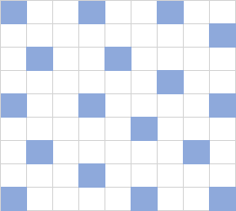
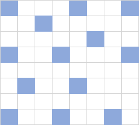

예약제로 운영하는 헬스장을 이용하는 손님들이 옷을 갈아입을 때 불편하지 않게 보관함을 최대한 떨어져서 주려고 한다. 보관함 간의 거리를 구하라.
입력 형식
- 0 < n <= 10
- 0 <= m <= 1,000
- timetable은 m × 2 크기의 2차원 배열이다. 각 행은 손님의 입실시각과 퇴실시각이 분 단위로 환산된 값 (t1, t2)가 들어있다.
- t1, t2에 대해서는 다음 조건이 성립한다. 600 <= t1 < t2 <= 1,320
입출력 예
| n | m | timetable | answer |
| 3 | 2 | [[1170,1210], [1200,1260]] | 4 |
| 2 | 1 | [[840,900]] | 0 |
| 2 | 2 | [[600,630],[630,700]] | 2 |
| 4 | 5 | [[1140,1200],[1150,1200],[1100,1200],[1210,1300],[1220,1280]] | 4 |
코드
#include <algorithm>
#include <queue>
#include <vector>
using namespace std;
int solution(int n, int m, vector<vector<int>> timetable) {
sort(timetable.begin(),timetable.end());
int maxPeople = 0, people = 0;
priority_queue<int,vector<int>,greater<int>> pq;
for (int i = 0; i < timetable.size(); i++) {
while (!pq.empty() && pq.top()<timetable[i][0]) {pq.pop(); people--;}
pq.push(timetable[i][1]);
people++;
if (people > maxPeople) maxPeople = people;
}
if (maxPeople <= 1) return 0;
else if (maxPeople == n*n) return 1;
else if (maxPeople == n*n/2 + n%2) return 2;
for (int d = n*2-2; d > 1; d--) {
people = maxPeople;
vector<vector<bool>> locker (n,vector<bool>(n));
for (int i = 0; i < n; i++) {
for (int j = 0; j < n; j++) {
for (int k = i; k >= 0; k--) {
for (int l = (k != i) ? n-1 : j-1; l >= 0; l--) {
if (locker[k][l] && abs(i-k)+abs(j-l)<d) goto exit1;
}
}
locker[i][j] = true;
people--;
if (people == 0) return d;
exit1:;
}
}
people = maxPeople;
locker = vector(n,vector<bool>(n));
int idx = 0, gap = (d-1)*2;
for (int idx = 0; idx < n; idx+=gap) {
locker[0][idx] = true;
people--;
if (idx+gap >= n && idx+d<n) {locker[0][idx+d] = true; people--;}
}
for (int i = 1; i < n; i++) {
for (int j = 0; j < n; j++) {
for (int k = i; k >= 0; k--) {
for (int l = (k != i) ? n-1 : j-1; l >= 0; l--) {
if (locker[k][l] && abs(i-k)+abs(j-l)<d) goto exit2;
}
}
locker[i][j] = true;
people--;
if (people == 0) return d;
exit2:;
}
}
}
return 0;
}
풀이
1
먼저 시간표를 정렬한다. 각 예약시간마다 사람이 들어올 때 최소 우선순위 큐가 존재하고 큐에 있는 퇴실 시간이 현재 사람의 입실시간보다 작으면, 이 퇴실시간을 큐에서 제거하고 사람 수를 하나 감소시킨다 (반복). 현재 사람의 입실시간에 맞춰 사람 수를 하나 증가시키고 현재 사람의 퇴실시간을 큐에 넣는다. 사람 수가 maxPeople보다 크면 maxPeople에 대입한다.
2
maxPeople이 보관함 개수와 같으면 보관함이 전부 사용중이고 거리가 1이다.
maxPeople이 n*n/2 + n%2와 같으면 한 칸씩 떨어져 보관함을 사용중이고 거리가 2다.
최대 거리부터 최소거리까지 반복해 답을 찾는다. 바로 답을 반환할 수 있기 때문이다. 거리에 따라 모든 사람을 보관함에 할당할 수 있으면 현재 거리를 반환한다. 사람을 보관함에 할당하는 방법은 두 가지다. (n이 제한되어 있지 않으면 틀릴 가능성이 있다)
- 첫 행의 첫 칸부터 시작해 차례대로 할당한다.
- 첫 행만 첫 칸부터 시작해 (d-1)*2만큼 띄워가며 할당한다. 두 번째 행부터는 차례대로 할당한다. 두 칸의 중앙인 칸 바로 아래 칸에 보관함을 할당하는 방법이다.


12
참조